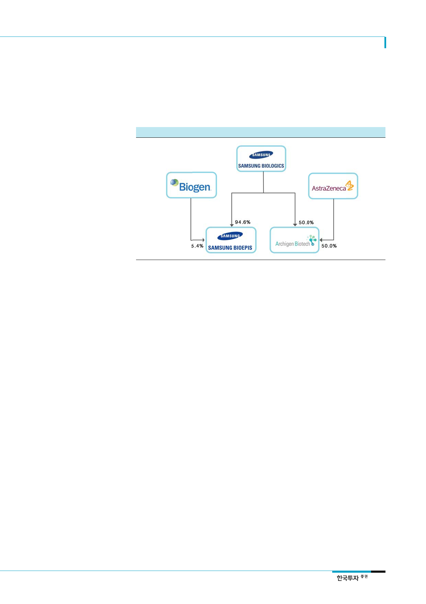

삼성바이오로직스(207940)
2개의 바이오시밀러 개발업체
자회사로 보유
2) 자회사를 통해 바이오시밀러 개발
동사는 현재 바이오시밀러 개발을 주력으로 하는 두 개의 자회사를 보유하고 있다. 지분
율 94.6%의 삼성바이오에피스(이하 바이오에피스), 50%의 Archizen Biotech(이하
Archizen)이다.
[그림 12] 삼성바이오로직스 지분도
바이오시밀러 2개 출시
자료: 전자공시시스템, 한국투자증권
1) 바이오에피스: 2012년 미국의 신약개발업체 Biogen과 공동설립한 합작법인이다. 현재
출시된 제품은 Enbrel과 Remicade의 바이오시밀러이다. 그 외 4개 이상의 바이오시밀러
파이프라인을 보유하고 있다. 바이오에피스의 매출은 바이오시밀러 판매에 따른 수익배분
과 파이프라인 개발에 따른 마일스톤을 파트너사로부터 수령하는 방식으로 발생한다.
Biogen은 설립 초기 바이오에피스에 약 4,500만 달러를 투자해 지분 15%를 획득했다. 또
한 2018년까지 바이오에피스의 지분을 49.9%까지 매입할 수 있는 콜옵션도 부여받았다.
바이오/제약 산업에 경험이 전무했던 삼성그룹은 노하우 및 기술전수를 위해 긴밀히 협력
할 수 있는 파트너사가 필요했던 것으로 판단한다. 바이오에피스의 파이프라인 개발이 빠
른 진전을 보이면서 공정가치가 상승함에 따라 Biogen이 바이오에피스의 콜옵션을 행사
할 가능성이 높다는 회계법인의 판단 하에 Biogen의 바이오에피스 지분율을 49.9%로 가
정하면서 2016년부터 바이오에피스는 연결자회사에서 분리됐다. 이에 따라 동사의 매출
은 2015년까지 바이오에피스의 매출을 합산했으나 2016년부터는 CMO사업만 매출로 인
식하기 시작했다. 동사가 바이오로직스의 지분을 Biogen에 매각했다는 가정에 따른 비현
금성 회계처리의 일환으로 2015년 4조 5,436억원의 투자자산 매각차익이 발생했다.
상장 당시 동사가 보유한 바이오에피스 지분은 91.2%, 공정가치는 4조 8,086억원이었다.
이 중 Biogen이 콜옵션을 행사할 경우 추가적으로 취득할 수 있는 지분은 41.1%이다.
Biogen의 콜옵션 취득원가는 공개되지 않았으나 Biogen이 콜옵션을 행사할 경우 상장 당
시 공정가치 기준에 따라 동사는 1조 8,205억원의 손실을 인식하게 된다. 이에 따라 동사
는 관련 손실을 미리 비용으로 인식해 파생상품평가손실로 처리하고 동일한 금액을 금융
부채로 처리했다. 바이오에피스의 공정가치는 매년 말 회계법인에 의해 재평가된다. 파이
프라인 개발이 진척을 보이면 바이오에피스의 가치도 상승해 파생상품부채가 증가하게 되
며 이에 따라 손익계산서에 파생상품손실이 추가적으로 발생하게 된다. Biogen이 콜옵션
을 행사하게 되면 동사는 파생상품부채가 소멸되고 이에 상응하는 금액의 현금이 투자활
동에 의한 현금흐름으로 유입된다. 동사가 바이오에피스의 지속적인 유상증자에 참여하면
서 Biogen은 현재 바이오에피스의 지분 5.4%만을 보유 중이다.
11